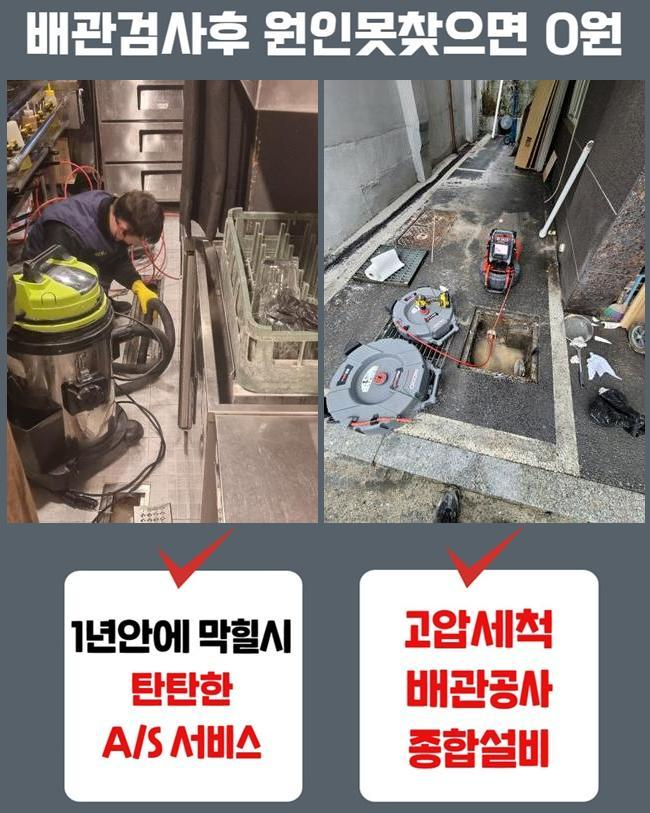
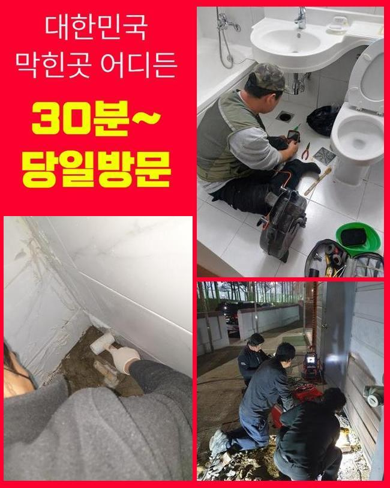
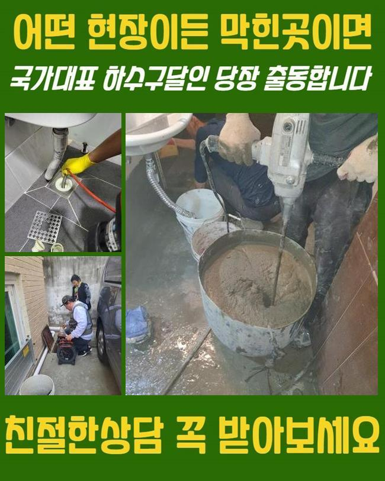
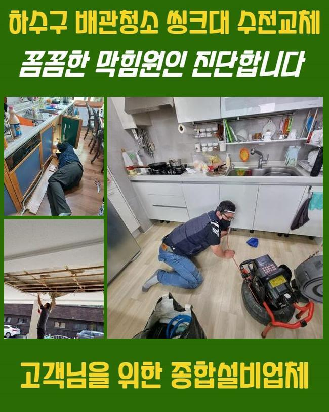
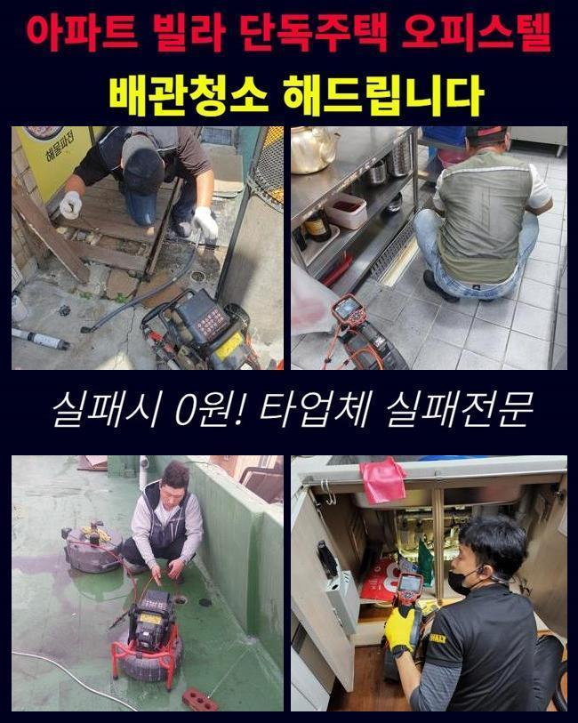
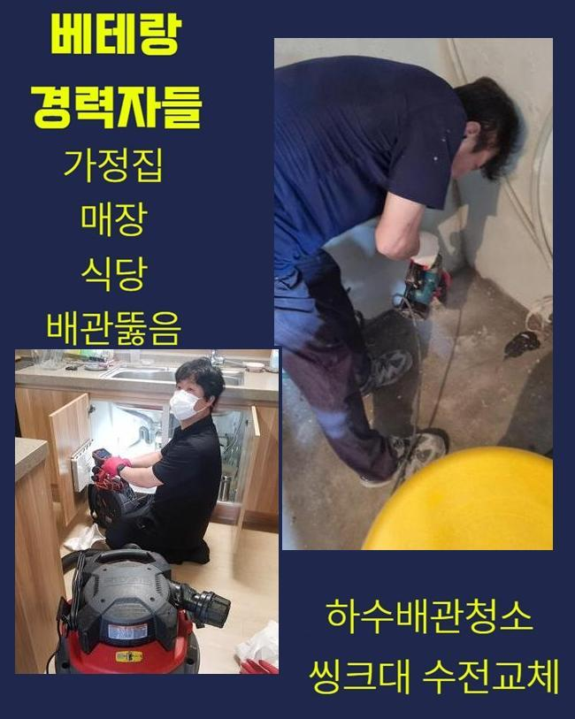
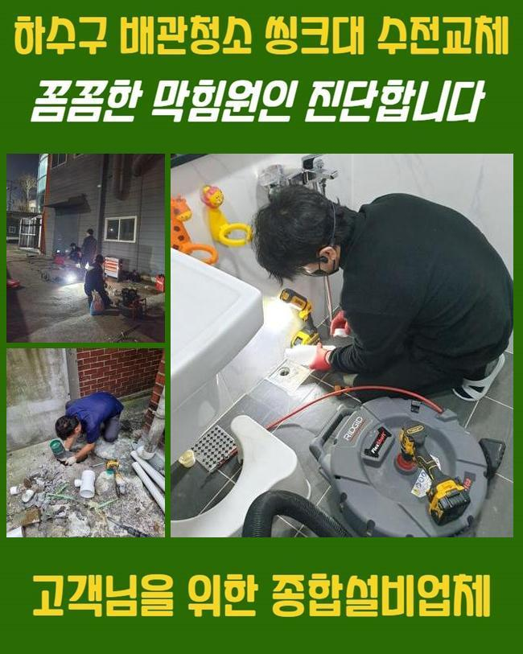

🏠 남동구 만수동씽크대배수관막힘 고잔동 하수구뚫어주는업체 배관막힘누수
용인 남동 싱크대막힘 전문 시공 후기

📋 작업 개요
- 위치: 용인 남동, 남동, 용인
- 서비스 유형: 싱크대막힘, 하수구막힘, 배관막힘, 집수정막힘, 누수수리, 역류해결, 뚫는업체, 배관청소, 고압세척
- 작업 일시: 2024. 11. 28. 1:39
- 업체명: 하수구수사대 (010-5615-2118)
🔍 문제 상황
남동구 만수동씽크대배수관막힘 고잔동 하수구뚫어주는업체 배관막힘누수
하수구가 막혔을때 가정집이나 상가건물에서는 불편할수밖에없죠
현장내용을 바탕으로 상세하게 안내드릴테니 참고해보시면 도움되시리라 생각해요
들렸던곳은 상가였는데 하수구막힘으로 문의하셨는데 엮여있는 하수구들도 청소를 같이해달라고 요청주셔서 방문드리게되었어요
여러매장이 입점한상가에서 막힘증상이 일어나게되면 물사용시 제약이생기어 영업을 진행하는데있어 곤란하기때문에 조심해야해요
빈번하게 막히는문제가 발현시될때 혼자서직접 대처하셨다고 하셨는데요
간편한처리법은 시도해볼수있지만 애초에 정도가심하면 간단한방법으로는 일시적으로만 처리된다는걸 인지하셔야합니다
그렇더라도 대부분은 별일아니라는 생각으로 인지한다는것이죠
막히는증세는 단순하게 이물제거만 진행하는것이아닌 거시적으로 하수구를 확인하고 작업해야해요

🔎 원인 분석
💡 전문가 진단: 정밀 진단 장비를 사용하여 슬러지의 고착 여부를 판명하고 타격/세척 작업을 실시했습니다.
현장장소로 방문하여 정화조쪽을 들여다보니 말씀하신대로 이쪽에서 막힘이발현된걸 알수가있었어요
넘칠수준정도로 막힌상태였고 내버려두다가는 물이넘치며 길거리에 오수가 흘러넘칠듯 싶었어요
신속빠르게 세척기계를 준비한뒤 깊게박힌 이물질들을 제거해주기로했죠
물이많다보니 입구부분을 발견하기 어려웠으므로 흡입장비를 활용해서 넘친물먼저 흡입해줬는데요
그이후에는 노즐을투입하여 작업했는데요
이물질의양이 많았으므로 한번만으로는 제거해내기가 어려웠어요
그렇기때문에 반복을하며 청소를진행했고 입구가열려 내시경검수하니 아직까지도 많은양으로 기름슬러지가 잔여된걸 살필수있었네요
기름이물외에도 성질이다른 오염물들이 들어차있었죠
상가는이런식으로 여러원인으로 막히므로 관리를잘해야해요
한번더 강조드리는것으로 관리하지않고 별일아닌듯 생각하신다면 2차피해가 발발될수있답니다

🔧 작업 과정
저희들의경우 정화조나 집수정등등 설비와관련해 트러블발현시 해결해드릴수있고 연관하여 궁금하실경우 상담을해보시면 된답니다
영업시설같은곳에서 역류나 막힘때문에 누수현상이 발생되는원인은 금일현장처럼 안쪽에 오염물질이 가득하기때문이죠
배수관안쪽에 오염물질이 쌓이게될수록 고착형태로 뭉치게되어 점진적으로 형태가커지고 배관안을 막아버려서 마침내 오늘현장과같은 상황들이 발생하는것이에요
막힘의경우 여러의 증상으로인해 발발되지만 대부분으로는 안쪽에이물이 퇴적되면서 막히는문제들이 나타나는거랍니다
다세대가 거주하는곳은 이런일이 종종더 발현하는데 그이유는 많은방문객이 건물을이용하기 때문이에요
이번장소도 마찬가지로 오염물질이 퇴적이되서 막혀버리게된 것이랍니다
하수자체가 한곳을통하여 모인채 빠져나가는데 메인하수구에 쓰레기같은 여러이물이 쌓이게된다면 막힐수밖에없어요
그렇기때문에 일상생활시 관리에집중해 막히지않게끔 대처를해야해요
이미막힘이 진행된경우 기술자를불러서 막힘과관련해 알아본후에 증상을 해결해야합니다
배수관은 육안을통해 살피기까다로워 전문기계를 구비하고있는 업체를 호출해서 안속에 뭐가있는지 살펴보고나서 작업해야해요
연관된지식이 없는상황임에도 불구하고 과도하게 배수관을 건드린다면 도리어 악화가된답니다
오랜기간 의뢰자께서 입구주위만 잔해물질을 없앴으므로 결국엔 이런일이 발생되었으며 장시간 축적되었기때문에 작업착수시 시간적인 부분에있어 소요가됩니다
잔여물들까지 빨아들였고 결국에는 상당량의 석회들을 소거시켰죠
금일장소는 오염도부분에서 심각했기에 다른장소에 비하여 시간자체가 많이 요구되었지만 제거할수있었어요
이물질을 모두 확인한 후에 한쪽으로모아서 마칠수있었죠


✅ 작업 완료
내시경을 투입하여 배수관내부를 조사해보니 상당한양으로 이물이차있던 하수관이 새것과같이 깔끔해졌는데요
갑자기생긴 문제로인해 당황스럽다면 염려하지마시고 기술자에게 문의해 해결하시는것이 확실한 해결책이에요
상황에대하여 상세히 조사해서 합리적으로 수리해드리고있으니 도움을원하시면 걱정하지마시고 마음편히 요청주시면 되겠습니다
어느곳이든 60분내로 도착해드리니 의뢰해주시면 성공의결실로 내비치도록할게요




⚠️ 베란다 누수 및 방수 관리 방법
- ✅ 비가 많이 올 때 창틀 주변이나 아래층 천장에 얼룩이 생기는지 정기적으로 확인해 보세요.
- ✅ 우수관 주변 실리콘 마감이 들뜨거나 깨진 틈새가 있는지 손상 여부를 수시로 체크하세요.
- ✅ 베란다 바닥 타일의 줄눈(메지)이 소실되면 그 틈으로 물이 침투하여 누수가 유발됩니다.
- ✅ 누수 의심 증상 발견 시 방치하면 아래층 손실이 커지므로 즉시 전문가의 진단을 받으십시오.
💡 핵심 정리
- 확실한 장비 작업(내시경 점검 및 샤프트 스케일링)으로 원인을 뿌리 뽑습니다.
- 작업 후 1년 이내에 동일한 부위 재발 시 100% 무상 A/S 서비스를 보장합니다.
- 서울 · 경기 · 인천 전 지역에 24시간 언제든 긴급 출동할 수 있도록 항시 대기 중입니다.
❓ 자주 묻는 질문 (FAQ)
🚨 용인 남동 싱크대막힘 문제로 고민이신가요?
정확한 원인 진단과 확실한 시공으로 재발 없는 해결을 약속드립니다.
24시간 긴급 출동 | 서울 · 경기 · 인천 전지역 | 1년 내 재발 시 무상 A/S